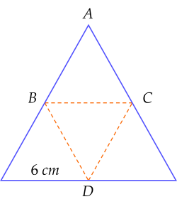

Câu 2. Hình họcKhông vẽ hình
Phần I — Trắc nghiệm chọn một phương án
0,23 điểm
Trên mặt phẳng tọa độ $Oxy$ cho hình thang $ABCD$ biết tọa độ các đỉnh là $A(1; \, 0)$ ; $B(1; \, 4)$ ; $C(5; \, 4)$ ; $D(7; \, 0)$ . Trung điểm của các cạnh $AB, \, BC, \, CD, \, DA$ lần lượt là $M, \, N, \, P, \, Q$ có tọa độ là
Câu 12. Đại số
Phần II — Trắc nghiệm đúng hoặc sai
0,92 điểm
Cho $d_1: y = 2x - 1$ ; $d_2: y = -x + 5$ và $d_3: y = \dfrac{1}{3}x + b$ .
(Nhấp vào ô màu vàng để chọn đúng / sai)
Mỗi ý a), b), c)… là một phát biểu độc lập: nhấp vào ô để chọn Đúng/Sai,
0,23 điểm mỗi ý.
Câu 13. Đại số
Phần II — Trắc nghiệm đúng hoặc sai
0,92 điểm
Chọn ngẫu nhiên một số nguyên dương nhỏ hơn $100$ .
(Nhấp vào ô màu vàng để chọn đúng / sai)
Mỗi ý a), b), c)… là một phát biểu độc lập: nhấp vào ô để chọn Đúng/Sai,
0,23 điểm mỗi ý.
Câu 14. Hình họcKhông vẽ hình
Phần III — Trắc nghiệm trả lời ngắn
0,47 điểm
Tìm $m$ biết đường thẳng $(d): y=(2~m-4)x+5$ song song với đường thẳng $(d'): 2x-y-3=0$ .
Trả lời ngắn — gõ kết quả, kèm đơn vị nếu đề hỏi đơn vị.
Câu 15. Hình họcCó vẽ hình
Phần III — Trắc nghiệm trả lời ngắn
0,47 điểm
Cho hình chóp tam giác đều $A.BCD$ có tất cả các cạnh đều bằng $6$ cm.

Diện tích xung quanh của hình chóp $A.BCD$ bằng bao nhiêu cen-ti-mét vuông? (kết quả làm tròn đến hàng phần mười)
Trả lời ngắn — gõ kết quả, kèm đơn vị nếu đề hỏi đơn vị.
Câu 16. Đại số
Phần III — Trắc nghiệm trả lời ngắn
0,47 điểm
Một hỗn hợp dung dịch gồm nước và muối trong đó có $15\%$ muối (về khối lượng). Phải thêm bao nhiêu kilôgam nước vào $20$ kg dung dịch trên để có được một dung dịch mới có $5\%$ muối?
Trả lời ngắn — gõ kết quả, kèm đơn vị nếu đề hỏi đơn vị.
Câu 17. Đại số
Phần III — Trắc nghiệm trả lời ngắn
0,47 điểm
Bạn Long có $n$ tấm thẻ cùng loại được đánh số từ $1$ đến $n$ . Bạn Long rút ngẫu nhiên một tấm thẻ. Biết rằng xác suất của biến cố "Lấy được tấm thẻ ghi số có một chữ số" là $0,25$ . Bạn Long có bao nhiêu tấm thẻ?
Trả lời ngắn — gõ kết quả, kèm đơn vị nếu đề hỏi đơn vị.